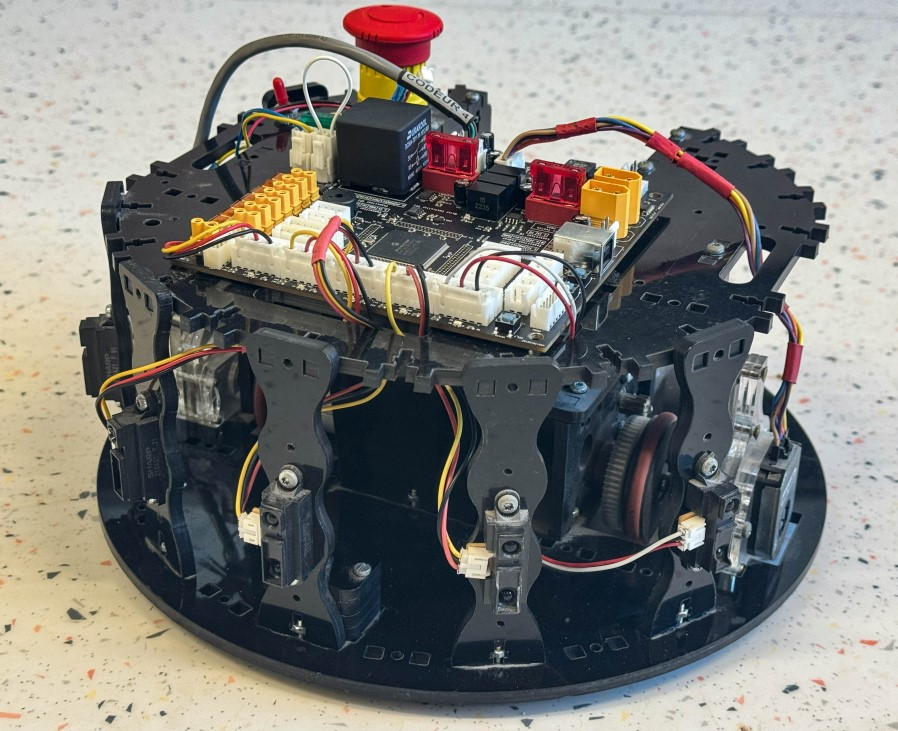

Robot Autonome Éviteur d'Obstacle Niv 2

Ajoute ici les images et rapports relatifs aux traces du projet.
Ajoute ici les images et rapports relatifs aux traces du projet.
Le projet visait à améliorer les performances d'un robot mobile en optimisant sa navigation grâce à des algorithmes d'asservissement avancés. Nous avons utilisé des algorithmes PID et du filtrage numérique pour améliorer la précision du mouvement. En intégrant des capteurs haute précision tels que des encodeurs et un gyroscope, nous avons optimisé les trajectoires et réduit les oscillations, tout en améliorant le temps de réponse. Une interface homme-machine a été développée pour rendre l'automatisation des tâches plus fluide, aboutissant à un système de navigation beaucoup plus précis et efficace.
Le projet consistait à développer un système domotique intelligent avec contrôle vocal pour automatiser la gestion d'une maison connectée. Nous avons utilisé la reconnaissance vocale et le traitement du langage naturel pour permettre un contrôle vocal fluide des appareils. Grâce à l'intégration de protocoles IoT comme MQTT, WiFi et Zigbee, nous avons connecté divers appareils. Une interface web responsive a été conçue, accompagnée d'une base de données pour gérer l'historique et les préférences de l'utilisateur. Le résultat est un assistant vocal fonctionnel, une interface intuitive et une automatisation des tâches basée sur les habitudes des utilisateurs.
Le projet d'Assistant Domotique n'a pas été particulièrement captivant pour moi, mais il a tout de même permis d'apprendre des compétences pratiques, notamment la création de fiches de maintenance. Bien que le projet en lui-même ne m'ait pas vraiment enthousiasmé, il m'a permis d'acquérir des connaissances utiles, comme l'intégration de systèmes IoT et l'optimisation d'interfaces. Cela a été une bonne occasion de se familiariser avec des aspects techniques importants, même si l'aspect pratique de l'application n'était pas aussi engageant que d'autres projets.
Le projet Robot Autonome Niv 2 a été très intéressant car il m'a permis de découvrir de nouveaux outils de développement, tels que Visual Studio et MPLAB. Ce projet m'a également poussé à réfléchir différemment pour concevoir un robot autonome éviteur d'obstacles plus avancé. L'utilisation de l'algorithme PID et de l'asservissement m'a permis d'améliorer la précision du robot et de comprendre l'importance de l'optimisation des systèmes de contrôle pour garantir une navigation fluide et efficace. Ce fut une excellente expérience pour approfondir mes connaissances en robotique et en programmation.